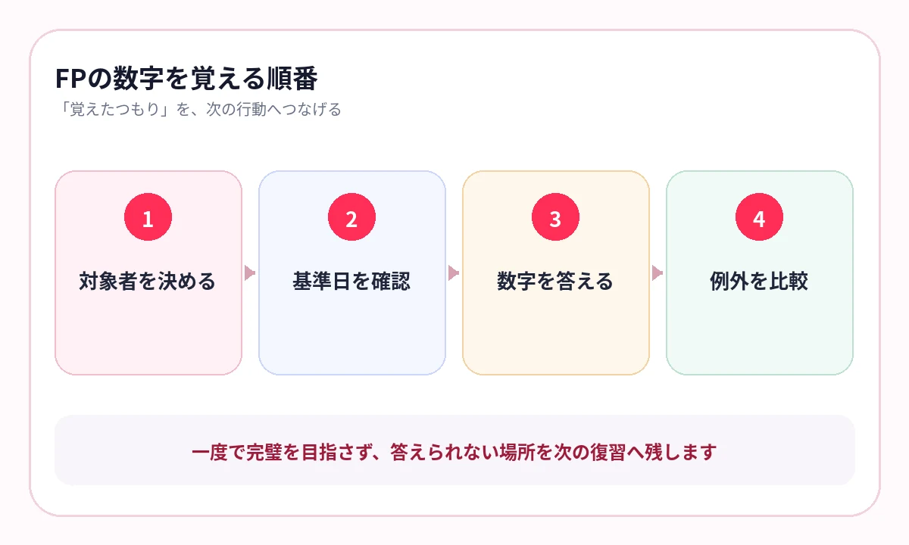

金額や率は覚えたのに、どの制度・対象者に使う数字か分からなくなっていませんか？
FPは、ライフプラン、保険、金融、税、不動産、相続など、生活に近い制度を横断して学びます。数字が多いだけでなく、年齢、家族構成、所得、契約、基準日によって答えが変わります。
数字だけを一覧で覚えるより、「誰に、いつ、どの条件で使う数字か」を問いにすると、学科と実技の両方へつながります。
6分野を、同じ覚え方にしない
FP技能検定は学科と実技で実施され、複数の生活・金融分野を扱います。
制度・給付
対象者、要件、開始時期、金額・率、手続を確認します。
税・不動産・相続
基準日、課税対象、控除、評価、特例を比較します。
金融・計算
指標の意味、式、入力する数字、結果の読み方をつなぎます。
数字を覚える前に、主語を置く
- 個人・法人・被保険者など誰の話か
- いつの時点・期間か
- 何を判定・計算する数字か
- 特例や別条件で変わるか
「〇万円」「〇％」だけの暗記では、問題文に複数の人物や制度が出たときに迷います。数字の前後を一文で答えます。
数字は単独で覚えず、対象者と基準日を必ず連れて覚えてください。
実例：必要経費・所得控除・税額控除は「どこから引くか」で分ける
どれも税負担の計算に関わりますが、差し引く段階が違います。名称の似た「控除」を一括で覚えず、計算の流れに置いてください。
| 項目 | どこから差し引くか | 計算上の役割 | 代表例 |
|---|---|---|---|
| 必要経費 | 収入から | 所得金額を求める | 事業の売上原価、家賃、給与など |
| 所得控除 | 各種所得の合計から | 課税所得を求める | 基礎控除、社会保険料控除、医療費控除など |
| 税額控除 | 税率を掛けた後の所得税額から | 納める税額を直接減らす | 配当控除、住宅借入金等特別控除など |
問題を解くときは、まず計算式のどこを空欄にしているかを見ます。「収入−〇〇」なら必要経費、「所得−〇〇」なら所得控除、「算出税額−〇〇」なら税額控除です。
同じ「控除」でも、引く場所が違えば答えは変わります。用語より先に、計算の順番を思い出してください。

3級は全体像、2級は条件と例外を厚くする
3級では、6分野の基本用語と制度の地図を作ります。2級では、同じ分野で条件、例外、計算、実務的な判断が増えます。
| 3級で固める | 2級で追加する |
|---|---|
| 制度の目的と基本対象 | 要件、特例、複数制度の比較 |
| 代表的な数字・率 | 基準日、上限、控除、計算過程 |
| 基本的な用語 | 事例での適用判断と実技の読み取り |
級ごとに別の知識として作り直すより、基本ページへ条件と例外を追加する方がつながります。
横にスワイプして画像を確認できます


{kind=link}
{kind=link}
計算問題も、最初に言葉で答える
式を丸暗記すると、数字の配置が変わったときに崩れます。計算前に、何を求めるのか、どの数字が必要かを言葉で確認します。
- 何を求める問題か
- どの時点の数字を使うか
- 控除・非課税・上限を先に反映するか
- 結果の単位と意味は何か
暗記ページでは、式の一部や項目名を隠し、過去問では実際の数値を入れて計算します。
法令基準日に合わせ、古い数字を残さない
FPは制度改正の影響を受けます。日本FP協会は、試験問題が法令基準日時点で施行されている法令を基準とすることを試験要綱で示しています。
AI暗記シートへ教材を保存するときは、教材名に年度や基準日を入れます。新しい教材へ更新したら、古い数字のページは削除または明確に分けます。
- FP3級｜年金｜2026年度教材
- FP2級｜相続税｜法令基準日確認済
- FP2級｜不動産｜特例比較
- FP共通｜金融指標｜計算式
よくある質問
FP3級と2級を同じ教材で勉強できますか？
基本概念は共有できます。2級では条件、例外、計算、実技への適用を追加し、教材名で級を区別します。
数字一覧を作るのは有効ですか？
確認用には有効です。ただし、対象者・基準日・制度名・例外を付けて答えられる形にします。
法改正はどう管理しますか？
受験年度と法令基準日に対応した公式情報・教材を使い、保存教材にも年度を付けて古い内容と混ぜないようにします。
必要経費・所得控除・税額控除はどう見分けますか？
必要経費は収入から、所得控除は所得の合計から、税額控除は計算後の所得税額から差し引きます。控除名ではなく、計算のどの段階かで覚えます。
参考情報
試験範囲・制度は公式情報、復習方法は学習科学の研究を参照しています。
数字を、事例で選べる知識へ
対象者・基準日・例外を、まとめて確認
FPテキストやPDFの制度・数字を隠し、級・分野・年度ごとに保存。間違えた知識を次のスキマ時間へ残せます。
iPhone・iPad対応／3枚まで無料保存／継続利用は800円の買い切り